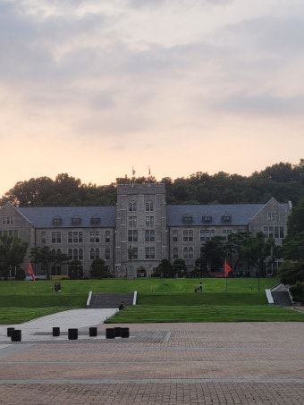

수시를 준비하는 학생과 학부모님께 가장 먼저 필요한 것은 지원하려는 대학의 전형 구조를 정확히 아는 것입니다. 오늘은 상위권 학생들이 많이 지원하는 고려대학교의 수시 전형과 대표 학과, 그리고 이번 수시를 어떻게 준비하면 좋은지 정리했습니다.
고려대 수시, 어떤 전형이 있나요
고려대학교 수시는 크게 학생부교과(학교추천), 학생부종합(학업우수전형), 학생부종합(계열적합전형), 그리고 논술전형으로 나뉩니다. 내신·세특·논술 중 어느 강점을 살릴지에 따라 지원 전형이 달라집니다.
- 학교추천 (학생부교과) — 소속 고교의 추천을 받아 지원하는 교과 전형입니다. 내신 교과 성적이 핵심이며 서류와 수능최저학력기준이 함께 반영됩니다. 학교 내신이 최상위인 학생에게 유리합니다.
- 학업우수전형 (학생부종합) — 학교생활기록부 서류평가 중심으로 선발하며 수능최저가 적용됩니다. 내신과 세특의 학업 역량을 두루 봅니다.
- 계열적합전형 (학생부종합) — 1단계 서류평가로 일정 배수를 선발하고 2단계에서 면접을 실시합니다. 수능최저가 없는 대신 지원 계열과의 적합성·탐구 역량을 깊이 있게 평가합니다.
- 논술전형 — 논술고사 중심으로 선발하며 수능최저를 적용합니다. 고려대 논술은 최근 다시 도입되어, 내신이 다소 부족해도 논술과 수능 기본기가 있으면 도전할 수 있습니다.
정리하면 내신이 최상위이면 학교추천·학업우수, 면접·탐구에 강하면 계열적합, 논술이 강하면 논술전형으로 방향을 잡는 것이 기본입니다. "고려대 수시등급"이라 부르는 합격선은 전형·학과별로 크게 다르므로, 반드시 당해 연도 입시결과(입결)를 확인해야 합니다.

고려대 대표 학과·모집단위 (키워드)
고려대는 서울 안암캠퍼스를 중심으로 인문·사회·자연·공학·의약학 전 분야를 아우르는 종합대학입니다. 대표 모집단위는 다음과 같습니다.
- 인문·사회 계열 — 문과대학(국어국문·영어영문·사학·철학·심리·사회), 정경대학(정치외교·경제·통계·행정), 경영대학(경영학과), 미디어학부, 국제학부
- 자연·이과 계열 — 이과대학(수학·물리·화학·지구환경과학), 생명과학대학(생명과학·생명공학·식품공학·환경생태공학)
- 공학 계열 — 공과대학(화공생명공학·신소재공학·건축사회환경공학·건축학·기계공학·산업경영공학·전기전자공학·융합에너지공학·반도체공학), 정보대학(컴퓨터학과·데이터과학과)
- 의약학·보건 계열 — 의예과, 보건과학대학(바이오의공학·바이오시스템의과학·보건정책관리·보건환경융합과학)
- 기타 — 사범대학(교육학과·국어교육·수학교육 등), 자유전공학부, 심리학부, 스마트보안학부
지원 학과에 따라 요구되는 교과 이수·세특 방향이 다릅니다. 공학·자연 계열은 수학·과학 심화가, 인문·사회 계열은 독서·탐구·언어 역량이 특히 중요합니다.
이번 수시, 고려대는 이렇게 준비하세요
고려대 수시를 노린다면 아래 순서로 전략을 세우는 것을 권합니다.
- 1) 내 강점으로 전형부터 고르기 — 내신 최상위면 학교추천·학업우수, 면접·탐구가 강하면 계열적합, 논술이 강하면 논술전형입니다. 강점에 맞는 전형을 먼저 정합니다.
- 2) 수능최저 충족 가능성 점검 — 학교추천·학업우수·논술은 수능최저가 합격을 좌우하는 경우가 많습니다. 최저 과목을 방학 동안 집중 관리하세요.
- 3) 계열적합은 면접 대비 — 2단계 면접의 비중이 큽니다. 제출 서류를 바탕으로 자기 언어로 설명하는 연습이 필요합니다.
- 4) 세특·활동을 지원 학과와 연결 — 학생부종합은 "왜, 어떻게 배웠는가"를 봅니다. 지원 계열과 이어지는 탐구·독서·활동을 정리해 두세요.
고려대는 어떤 학교인가요
고려대학교는 서울 안암캠퍼스를 중심으로 한 사립 명문 종합대학으로, 법·경영·정경 등 인문사회 계열과 공학·의학에서 오랜 전통과 강점을 가지고 있습니다. 강한 공동체 문화와 실용 학문을 강조하는 학풍이 특징이며, 반도체·데이터과학 등 미래 산업 연계 학과도 폭넓게 운영합니다. 그만큼 학생의 진로와 강점에 맞는 모집단위 선택이 합격의 관건입니다.
※ 모집 인원·수능최저·전형 일정 등 세부 사항은 해마다 달라질 수 있습니다. 지원 전 반드시 고려대학교 입학처 모집요강에서 최종 확인하세요. 본 글은 학부모·학생의 이해를 돕기 위한 정리 자료입니다.